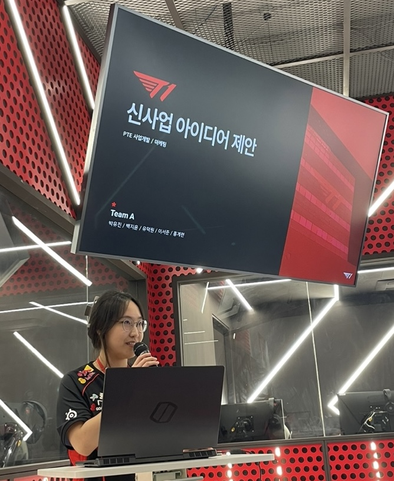

Welcome to My Website
Hello! My name is Yujin Park, and I'm a third-year student at Northeastern University, majoring in Computer Science and Business Administration with a concentration in Marketing Analytics. My interests lie at the dynamic intersection of technology and entertainment, with a particular focus on the video game development and esports industry. I am passionate about exploring how innovation and creativity can drive growth and engagement within these fields. Alongside my academic pursuits, I am deeply engaged in software engineering and data visualization. I find immense satisfaction in using my technical skills to build solutions that are not only functional but also visually engaging, enhancing the way data is interpreted and utilized.
My passion for the esports sector led me to join the Path to Esports program at T1 Esports Academy, where I gained valuable insights into the business development and marketing strategies that fuel this rapidly growing industry. During the program, I had the opportunity to work on a business development project, which I presented to professionals at T1 Entertainment & Sports, allowing me to experience the thrill and challenge of pitching ideas to industry experts. I also contributed to the T1 Home Ground event by supporting the membership booth, where I engaged with over 7,000 esports fans. This hands-on experience sharpened my skills in customer interaction and event support, and reinforced my commitment to exploring the various facets of the esports world.